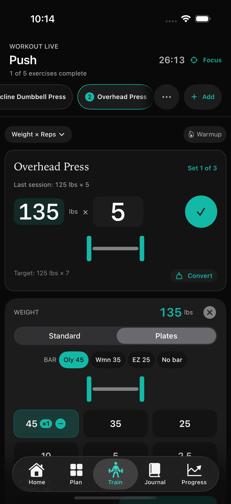
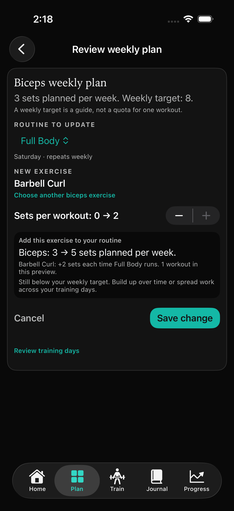

{kind=link}
{kind=link}
Yearly
A year of Pro, billed annually.
Auto-renews until cancelled.Stack Pro helps you decide what to lift, what to load and where your week needs attention.
Your workout log stays free. Add these tools when you want more from it.
Smart Targets suggest weight and reps from your logged sets. Keep the last session in view, see a suggested next step and adjust it to fit how you feel today.
Last set → Suggested target → Your decision
Targets are suggestions, not a promise of results or a substitute for your judgment.
 View full app screen
View full app screen
Choose a weight and see the plates for each side. Spend the time between sets getting ready for the next one.

View full app screenCompare your planned sets with your muscle targets. Review the gap, preview an editable routine change and see its effect before saving.
Your plan changes only when you choose to save it.

View full app screenCheck your rest, add a little time or repeat your previous set without reopening the app. Pro brings those controls to your compatible iPhone's Lock Screen and Dynamic Island.
 View full app screen
View full app screen
All three options include the same Pro tools. Current prices and any eligible offers are shown in your local currency in Stack before you confirm a purchase.
A year of Pro, billed annually.
Auto-renews until cancelled.Pro one month at a time.
Auto-renews until cancelled.Pro with a one-time purchase.
No recurring subscription.Manage or cancel subscriptions in your Apple Account settings. Deleting Stack does not cancel a subscription. Purchase terms.
Workouts, routines, history, basic strength trends, the muscle map and data export are free. If a Pro subscription ends, your saved training data remains available.
Start logging free. Add Pro when you want more direction.
For iPhone and iPad. Optional in-app purchases.